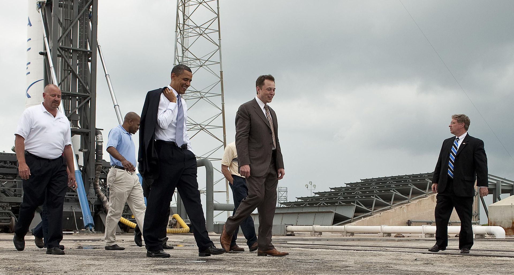
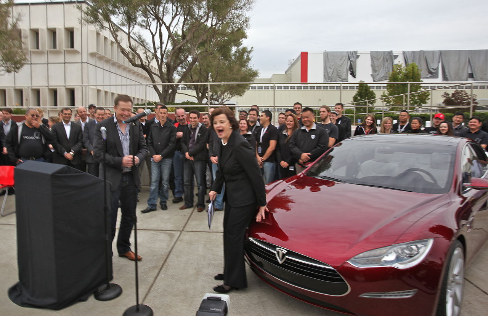
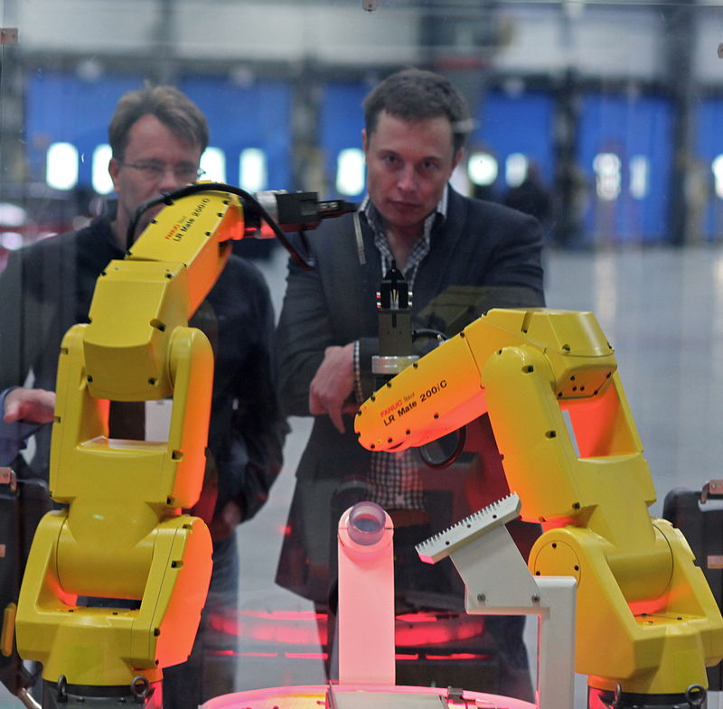
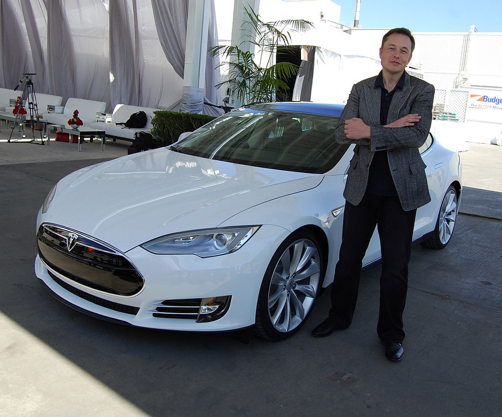

Zip2
Main article: Zip2 In 1995, Musk and his brother, Kimbal, started Zip2, a web software company, with money raised from a small group of angel investors.The company developed and marketed an Internet city guide for the newspaper publishing industry, with maps, directions and yellow pages.The vector graphics mapping and direction code was implemented by Musk in Java. Musk obtained contracts with The New York Times and the Chicago Tribune and persuaded the board of directors to abandon plans for a merger with CitySearch. Musk's attempts to become CEO were thwarted by the board.Compaq acquired Zip2 for US$307 million in cash and US$34 million in stock options[citation needed] in February 1999.Musk received US$22 million for his 7 percent share from the sale
X.com and PayPal
Main articles: PayPal and X.comIn March 1999, Musk co-founded X.com, an online financial services and e-mail payment company, with US$10 million from the sale of Zip2. One year later, the company merged with Confinity, which had a money-transfer service called PayPal. The merged company focused on the PayPal service and was renamed PayPal in 2001. PayPal's early growth was driven mainly by a viral marketing campaign where new customers were recruited when they received money through the service. Musk was ousted in October 2000 from his role as CEO (although he remained on the board) due to disagreements with other company leadership, notably over his desire to move PayPal's Unix-based infrastructure to Microsoft Windows. In October 2002, PayPal was acquired by eBay for US$1.5 billion in stock, of which Musk received US$165 million. Before its sale, Musk, who was the company's largest shareholder, owned 11.7% of PayPal's shares.
SpaceX
In 2001, Musk conceived Mars Oasis, a project to land a miniature experimental greenhouse on Mars, containing food crops growing on Martian regolith, in an attempt to reawaken public interest in space exploration.In October 2001, Musk travelled to Moscow with Jim Cantrell (an aerospace supplies fixer), and Adeo Ressi (his best friend from college), to buy refurbished Dnepr Intercontinental ballistic missiles (ICBMs) that could send the envisioned payloads into space. The group met with companies such as NPO Lavochkin and Kosmotras; however, according to Cantrell, Musk was seen as a novice and was consequently spat on by one of the Russian chief designers.The group returned to the United States empty-handed. In February 2002, the group returned to Russia to look for three ICBMs, bringing along Mike Griffin. Griffin had worked for the CIA's venture capital arm, In-Q-Tel, as well as NASA's Jet Propulsion Laboratory, and was just leaving Orbital Sciences, a maker of satellites and spacecraft. The group had another meeting with Kosmotras and were offered one rocket for US$8 million. Musk considered the price too high, and stormed out of the meeting. On the flight back from Moscow, Musk realized that he could start a company that could build the affordable rockets he needed. According to early Tesla and SpaceX investor Steve Jurvetson,Musk calculated that the raw materials for building a rocket were only 3 percent of the sales price of a rocket at the time. It was concluded that, in theory, by applying vertical integration and the modular approach employed in software engineering, SpaceX could cut launch price by a factor of ten and still enjoy a 70-percent gross margin. Ultimately, Musk ended up founding SpaceX with the long-term goal of creating a true spacefaring civilization.
With US$100 million of his early fortune,Musk founded Space Exploration Technologies, or SpaceX, in May 2002. Musk is chief executive officer (CEO) and chief technology officer (CTO) of the Hawthorne, California-based company. By 2016, Musk's private trust held 54% of SpaceX stock, equivalent to 78% of voting shares.
SpaceX develops and manufactures space launch vehicles with a focus on advancing the state of rocket technology. The company's first two launch vehicles were the Falcon 1 and Falcon 9 rockets (a nod to Star Wars' Millennium Falcon), and its first spacecraft is the Dragon (a nod to Puff the Magic Dragon). SpaceX designed the family of Falcon launch vehicles and the Dragon multipurpose spacecraft over a span of seven years. In September 2008, SpaceX's Falcon 1 rocket became the first privately funded liquid-fueled vehicle to put a satellite into Earth orbit.
Tesla
Tesla, Inc. (originally Tesla Motors) was incorporated in July 2003 by Martin Eberhard and Marc Tarpenning, who financed the company until the Series A round of funding.Both men played active roles in the company's early development prior to Elon Musk's involvement. Musk led the Series A round of investment in February 2004, joining Tesla's board of directors as its chairman. All three, along with J. B. Straubel, were inspired by the earlier AC Propulsion tzero electric roadster prototype. Musk took an active role within the company and oversaw Roadster product design at a detailed level, but was not deeply involved in day-to-day business operations. Following the financial crisis in 2008 and after a series of escalating conflicts in 2007, Eberhard was ousted from the firm. Musk assumed leadership of the company as CEO and product architect in 2008, positions he still holds today. As of 2019, Elon Musk is the longest tenured CEO of any automotive manufacturer globally.
Tesla Motors first built an electric sports car, the Tesla Roadster, in 2008, with sales of about 2,500 vehicles to 31 countries. Tesla began delivery of its four-door Model S sedan on June 22, 2012. It unveiled its third product, the Model X, aimed at the SUV/minivan market, on February 9, 2012; however, the Model X launch was delayed until September 2015. In addition to its own cars, Tesla sold electric powertrain systems to Daimler for the Smart EV, Mercedes B-Class Electric Drive and Mercedes A Class, and to Toyota for the RAV4 EV. Musk was able to bring in both companies as long-term investors in Tesla
Musk favored building a more affordable Tesla model; this led to the Model 3 that was unveiled in 2016, with a planned base price of US$35,000. Initial deliveries began in 2017, with the US$35,000 base model becoming available in February 2019.Musk originally intended to name the model 3 as the model E but was blocked by Ford which held the trademark, with Musk concluding that "Ford was killing SEX"
Several mainstream publications have compared him with Henry Ford for his work on advanced vehicle powertrains.Musk has named the fastest acceleration modes of their vehicles after the Spaceballs' starship speeds (Ludicrous Speed, Plaid Speed)
  SolarCity
Musk provided the initial concept and financial capital for SolarCity, which was then co-founded in 2006 by his cousins Lyndon and Peter Rive. By 2013, SolarCity was the second largest provider of solar power systems in the United States. SolarCity was acquired by Tesla, Inc. in November 2016 and is currently a wholly owned subsidiary of Tesla.
The underlying motivation for funding both SolarCity and Tesla was to help combat global warming. In 2012, Musk announced that SolarCity and Tesla would collaborate to use electric vehicle batteries to smooth the impact of rooftop solar on the power grid, with the program going live in 2013.
On June 17, 2014, Musk committed to building a SolarCity advanced production facility in Buffalo, New York, that would triple the size of the largest solar plant in the United States. Musk stated the plant will be "one of the single largest solar panel production plants in the world," and it will be followed by one or more even bigger facilities in subsequent years. The Tesla Gigafactory 2 is a photovoltaic (PV) cell factory, leased by Tesla subsidiary SolarCity in Buffalo, New York. Construction on the factory started in 2014 and was completed in 2017. Tesla accepted $750 million in public funds from New York Governor Andrew Cuomo as part of the Buffalo Billion project—a plan to invest money to help the economy of the Buffalo, New York area—to build the factory and infrastructure.
More projects
Hyperloop Is a proposed mode of passenger and freight transportation, first used to describe an open-source vactrain design released by a joint team from Tesla and SpaceX. Hyperloop is a sealed tube or system of tubes through which a pod may travel free of air resistance or friction conveying people or objects at high speed while being very efficient, thereby drastically reducing travel times over medium-range distances.
OpenAI Is an independent research organization consisting of the for-profit corporation OpenAI LP and its parent organization, the non-profit OpenAI Inc. The corporation conducts research in the field of artificial intelligence (AI) with the stated aim to promote and develop friendly AI in such a way as to benefit humanity as a whole. Founded in late 2015, the San Francisco-based organization aims
Neuralink is an American neurotechnology company founded by Elon Musk and others, developing implantable brain–machine interfaces (BMIs). The company's headquarters are in San Francisco; it was started in 2016 and was first publicly reported in March 2017.Since its founding, the company has hired several high-profile neuroscientists from various universities.